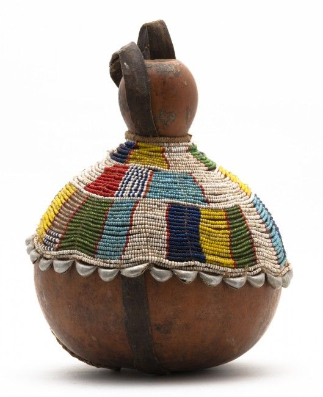

Maasai Beaded Gourd
$120.00
Size: 13" H × 10" W
Cultural Influence: Kenyan / Maasai Tribe
Description
About this product:Authentic gourd wrapped in vibrant Maasai beadwork.
Background: Based on traditional Kenyan Maasai gourds, which are hand-decorated
with colorful beads and used in ceremonies or for displaying your plants.
It honors African craftsmanship and heritage.